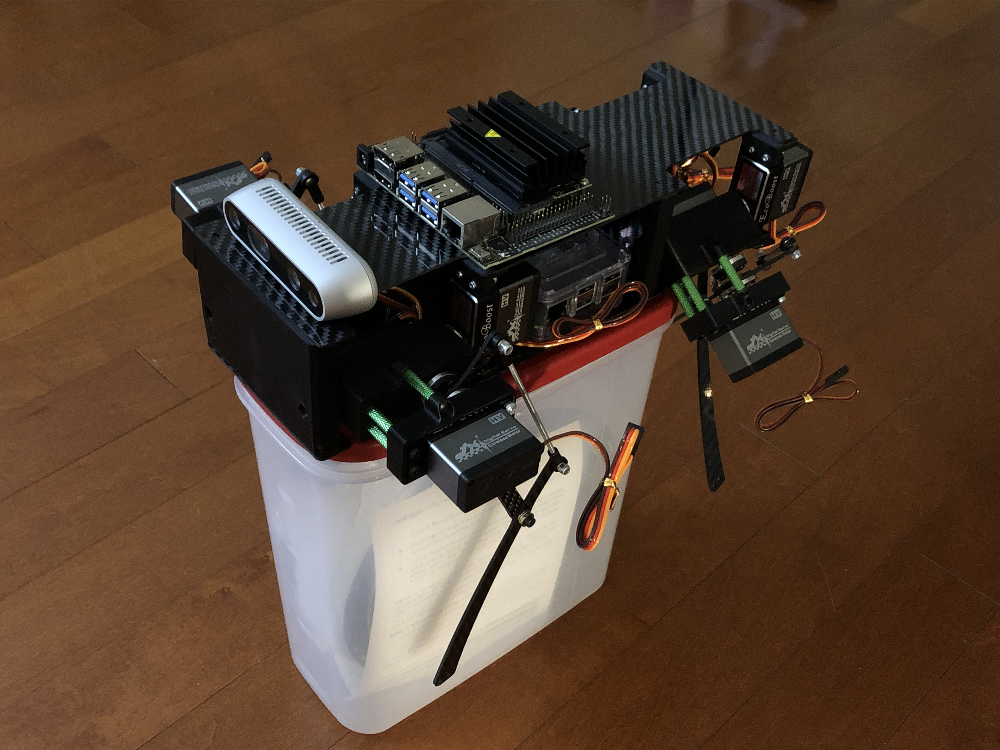

Introduction
This is an ongoing project. Updates will keep coming.

This is a document of how I built a quadruped robot. The design is based on Stanford Pupper which is designed by their robotics club.
Pupper is a small quadruped robot that can hop, trot and walk around.